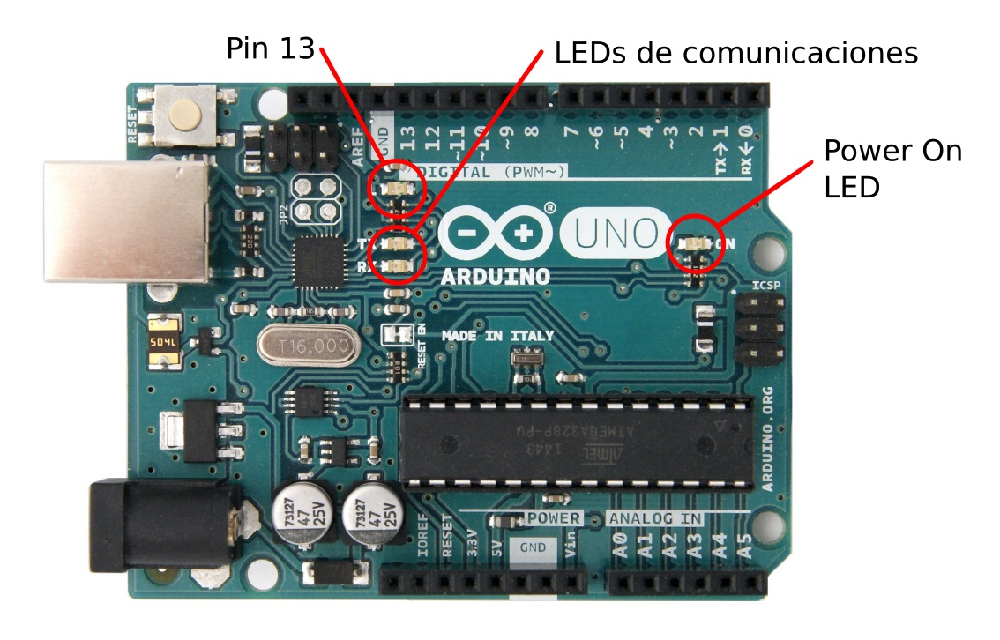
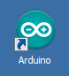
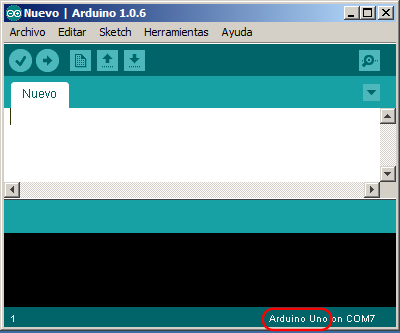
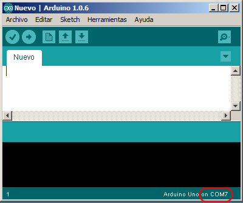

Solució de problemes amb Arduino¶
La placa Arduino està connectada?¶
El cable USB s’ha de connectar a l’ordinador i a la placa Arduino. L’ordinador ha d’estar encès.
Si tot ha anat bé, la placa Arduino mostra un LED d’encesa anomenat LED de ** Power on **:
{kind=link}

L’entorn Arduino està instal·lat?¶
L’entorn ARDUINO IDE es pot descarregar de la pàgina oficial del projecte a la pestanya "Programari", pressionant el sistema operatiu adequat a la secció "Descarregueu la IDE Arduino":
Un cop descarregat el programa, s’ha d’instal·lar a l’ordinador. També és necessari instal·lar els controladors de manera que l’ordinador reconegui la placa Arduino quan estigui connectat a un port USB.

La placa correcta està configurada?¶
A les `` eines ... Placa: `` o a les versions antigues `` Eines ... Targeta ... `` Heu de configurar la mateixa placa Arduino connectada a l'ordinador. El model més comú és "Arduino Uno`, però depèn de la placa que es connecta.
Tant la placa com el port seleccionat es poden veure a la cantonada inferior dreta de l’entorn Arduino:

El port adequat està configurat?¶
Hi ha diversos ports en sèrie a l’ordinador. Només un d’aquests ports en sèrie pertany a la placa d’Arduino i aquest és el que hem de configurar.
El port de comunicacions seleccionat es pot veure a la part inferior dreta de l’entorn Arduino:

Per canviar -lo, heu de prémer el port adequat `` eines ... port ... ``
Per verificar que el port està ben configurat, es pot obrir el monitor de la sèrie i que els LED de comunicacions de la placa Arduino han de parpellejar. Una altra prova és intentar enviar un programa. Mentre carregueu el programa, els LED de comunicacions han de parpellejar.
Els controladors adequats estan instal·lats?¶
Si l’entorn Arduino ja està instal·lat i l’ordinador no reconeix la placa Arduino en connectar -la, el problema es pot solucionar instal·lant els controladors que inclouen el programari de l’entorn Arduino.
A continuació, es mostren diverses versions dels controladors d'Arduino. Després de descarregar el fitxer, el programari d’instal·lació s’ha de desglossar i executar.
Si s’utilitza una placa compatible amb Arduino amb un xip de comunicacions ** CH340 **, cal instal·lar un altre controlador diferent de l’estàndard:
- Xip de comunicacions CH340. Controlador per a Windows <../../_ Static/Descàrregues/CH340-WIN-DIRRER-V31.ZIP> ` `
- Pàgina de Microsoft Per descarregar el controlador ch340 <http://catalog.update.microsoft.com/v7/site/scopeviewredirect.aspx?updateid=be9c8169-b12b-475f-81b8-3d3e69181e8c> `` `` `` `` `` `` `` `` `` `` `` `` `` `` `` `` `` `` `
Hi ha un curtcircuit?¶
Si sembla que la placa Arduino està connectada correctament i, malgrat això, el LED d’encesa es manté apagat, és possible que els cables connectats a Arduino estiguin mal connectats i causin un curtcircuit. Per comprovar aquest error, s'ha de desconnectar el cable connectat al terminal "5V" i el cable connectat al terminal "vin".
Funcionen les comunicacions de cables USB?¶
Un altre problema que pot sorgir amb el cable USB és que els fils de comunicacions es tallen mentre els fils alimentaris funcionen correctament. En aquest cas, el LED de la placa Arduino s’encendrà, però l’ordinador no reconeixerà la placa i les comunicacions no funcionaran.
La manera més fàcil de verificar que no hi ha problemes amb el cable USB és connectar aquest cable a un altre dispositiu que funciona correctament o canviar el cable per a un altre i comprovar que tot funciona bé.
Comproveu si la placa Arduino està ben instal·lada¶
Per assegurar -se que la placa Arduino està ben instal·lada i tot funciona correctament, es seguiran els passos següents:
Obriu l’entorn IDE d’Arduino fent clic a la seva icona:
Obriu un programa d’exemple fent clic al `` fitxer ... exemples ... 01.Basics ... Blink``.
També podeu copiar i enganxar el programa següent a l’entorn d’Arduino.
1 2 3 4 5 6 7 8 9
// Blink Program void setup() { pinMode(LED_BUILTIN, OUTPUT); } void loop() { digitalWrite(LED_BUILTIN, HIGH); // turn the LED On delay(1000); // wait for a second digitalWrite(LED_BUILTIN, LOW); // turn the LED Off delay(1000); // wait for a second }
Finalment, feu clic al programa `` ... Carrega (Ctrl+U) `` per transferir el programa a la placa Arduino.
Si tot ha funcionat correctament, el LED de la placa Arduino començarà a parpellejar amb un temps per un segon i un temps lliure des d’un altre segon.